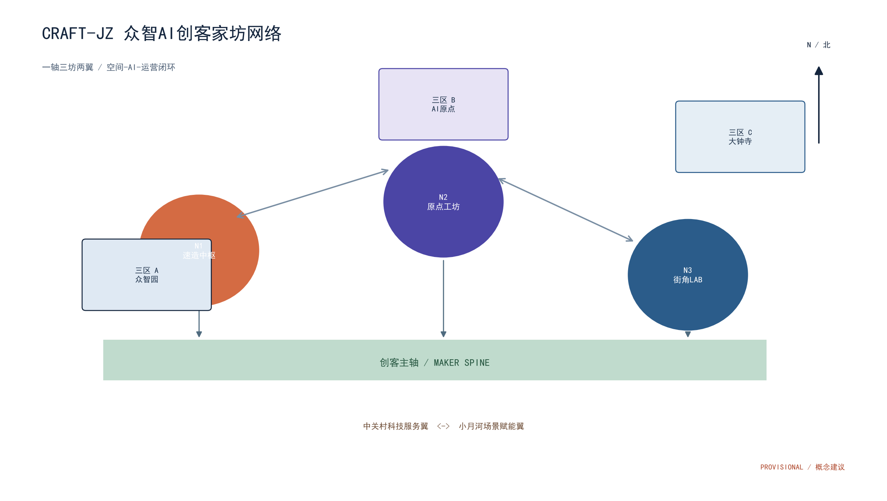
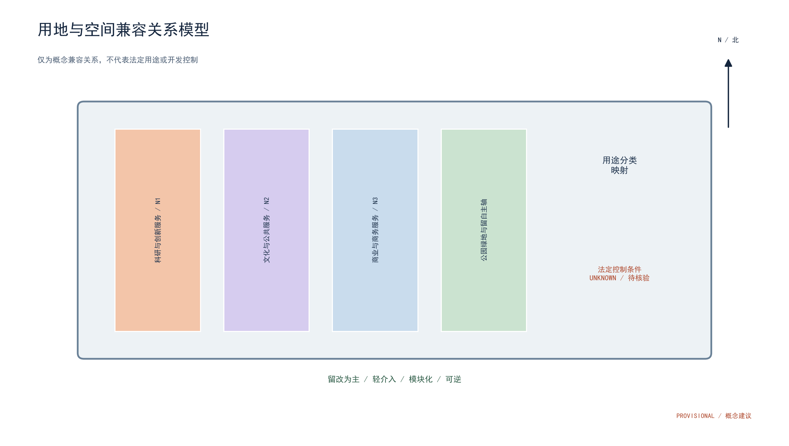
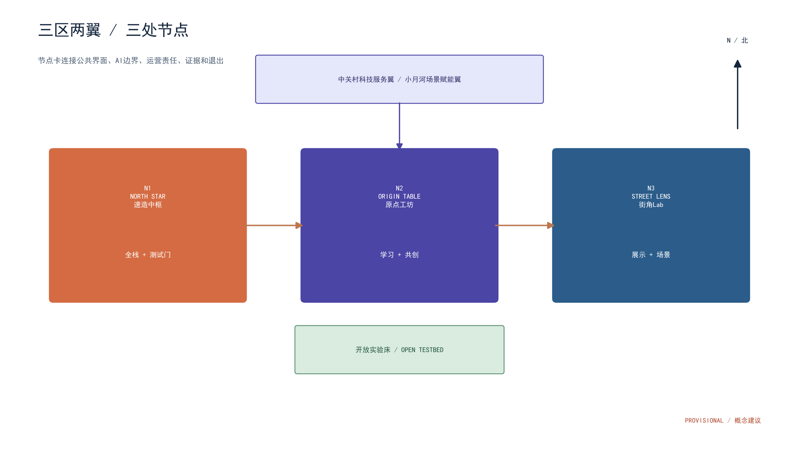
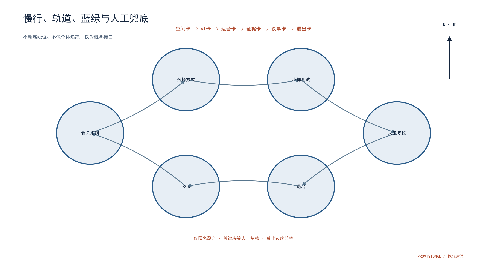
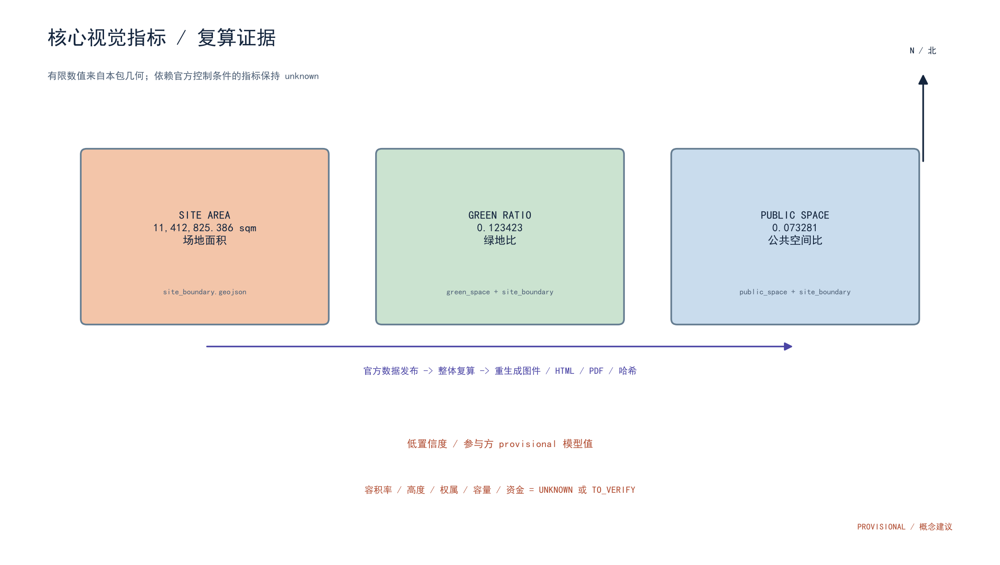
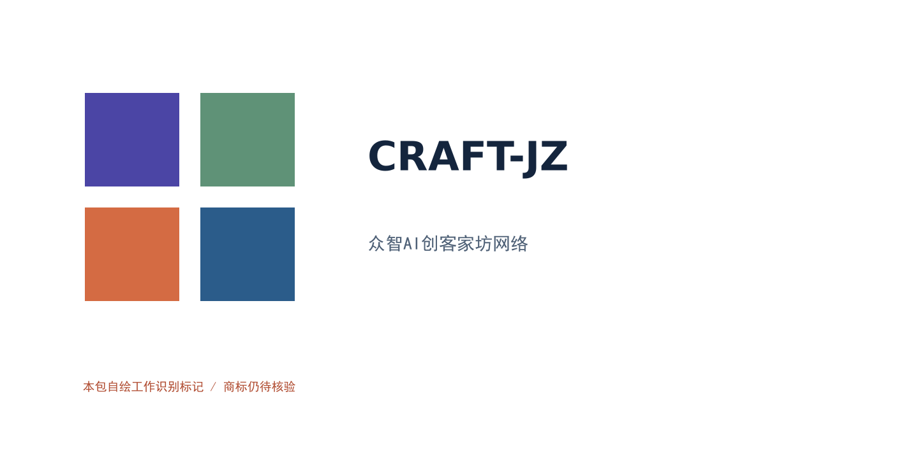

众智AI创客家坊网络 / CRAFT-JZ
PROVISIONAL 参与方模型 - 非官方红线
Three zones, two wings, three nodes, twelve scene cards, four test protocols, and a human-reviewed operating loop.
核心视觉指标
Site area / 场地面积11,412,825.386sqm · provisional
Green ratio / 绿地比0.123423ratio · provisional
Public-space ratio / 公共空间比0.073281ratio · provisional
有限数值可由本包几何复算。容积率、高度、权属、容量、资金和运营基线保持 unknown 或 to_verify。
空间-AI-运营闭环
空间卡 -> AI卡 -> 运营卡 -> 证据卡 -> 议事卡 -> 退出卡。仅匿名聚合；关键决策人工复核；禁止过度监控。
图件






状态与权利
仅为概念建议。未宣称合作、审批、资金、权属、商标、许可或现实数据事实。详见proposal.md、sources.json、assumptions.json、risk.json和版权权利台账。
范围与审阅索引
总览地图 · 三层范围 · 重点区域 · 用地分区 · 交通慢行 · 蓝绿公共空间 · 建筑 · 更新项目 · AI 场景 · 核心指标 · 任务覆盖 · 自检状态 · 来源 · 假设